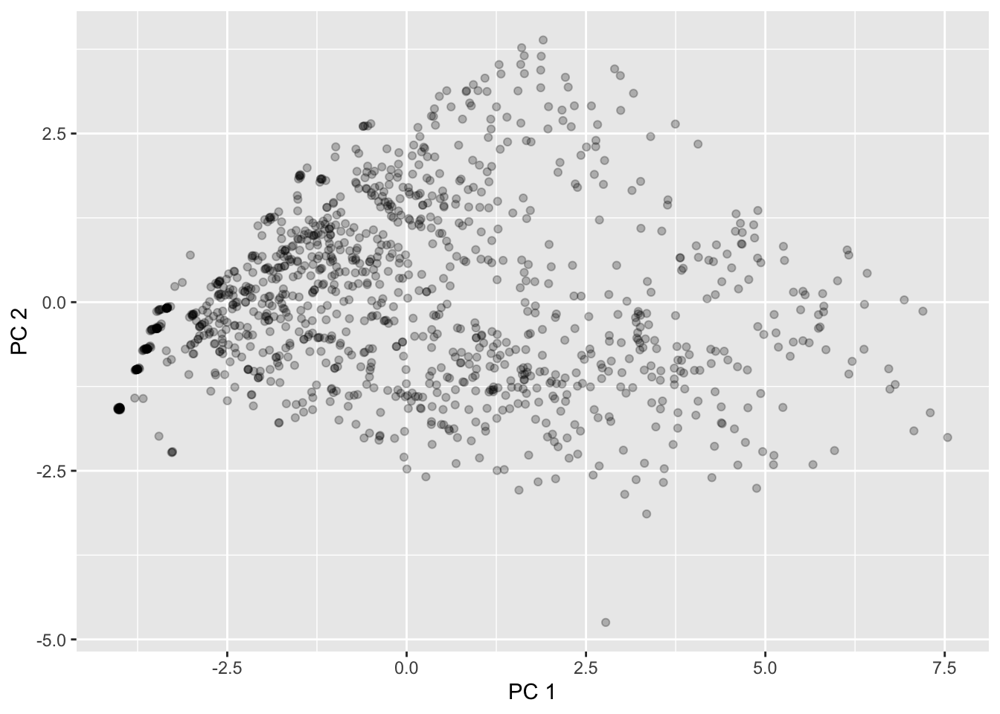
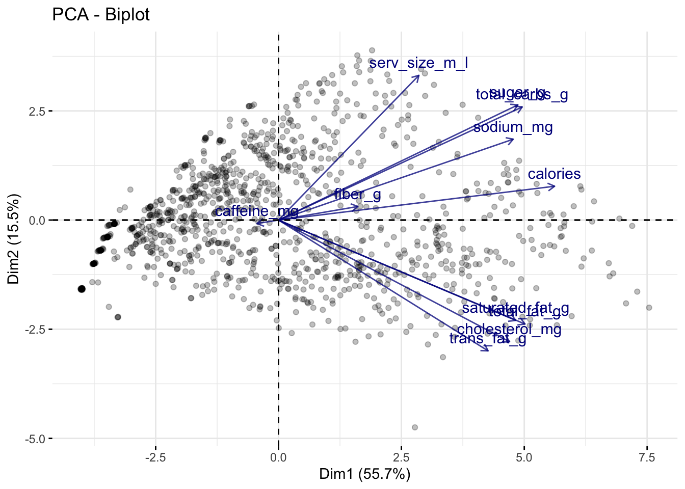
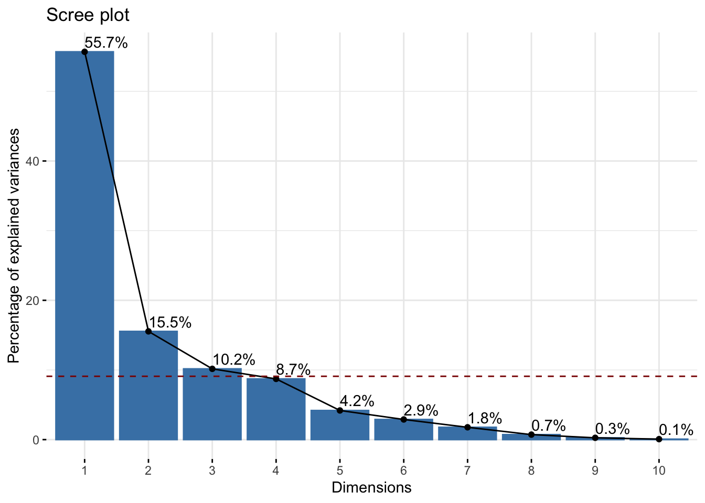
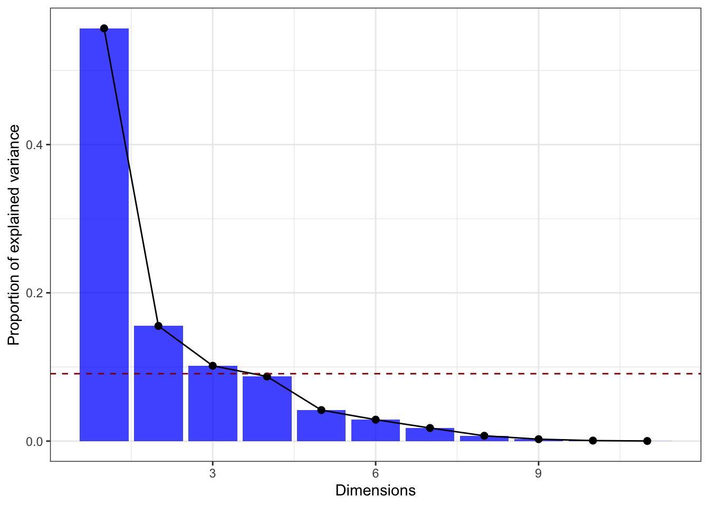
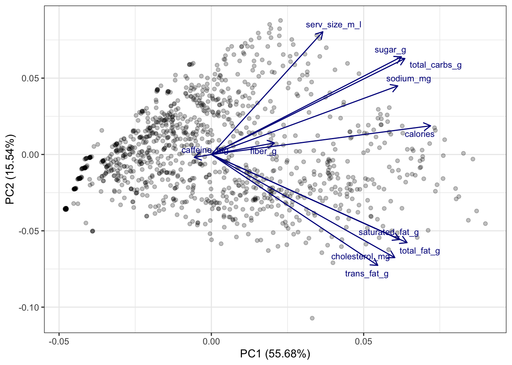

library(tidyverse)
starbucks <-
read_csv("https://raw.githubusercontent.com/rfordatascience/tidytuesday/master/data/2021/2021-12-21/starbucks.csv") |>
# Convert columns to numeric that were saved as character
mutate(trans_fat_g = as.numeric(trans_fat_g),
fiber_g = as.numeric(fiber_g))Demo 08: Principal Component Analysis
Principal Components of Starbucks
Throughout this demo we will again use the dataset about Starbucks drinks available in the #TidyTuesday project.
You can read in and manipulate various columns in the dataset with the following code:
We will apply principal component analysis (PCA) to the quantitative variables in this dataset:
# Select the variables of interest:
starbucks_quant_data <- starbucks |>
dplyr::select(serv_size_m_l:caffeine_mg)
dim(starbucks_quant_data)[1] 1147 11As seen above, there are 11 quantitative variables in the dataset, and it’s difficult to visualize 11 quantitative variables simultaneously. Maybe we can “get away” with just plotting two dimensions that make up the majority of the variation among these 11 variables (i.e., the first two principal components).
To conduct PCA, you must center and standardize your variables. We can either do that manually with the scale() function:
scaled_starbucks_quant_data <- scale(starbucks_quant_data)Or we can tell R do that for us before performing PCA using the prcomp() function:
# perform PCA
starbucks_pca <- prcomp(starbucks_quant_data,
# Center and scale variables:
center = TRUE, scale. = TRUE)
# This is equivalent to the following commented out code:
# starbucks_pca <- prcomp(scaled_starbucks_quant_data,
# center = FALSE, scale. = FALSE)
# View the summary
summary(starbucks_pca)Importance of components:
PC1 PC2 PC3 PC4 PC5 PC6 PC7
Standard deviation 2.4748 1.3074 1.0571 0.97919 0.67836 0.56399 0.4413
Proportion of Variance 0.5568 0.1554 0.1016 0.08716 0.04183 0.02892 0.0177
Cumulative Proportion 0.5568 0.7122 0.8138 0.90093 0.94276 0.97168 0.9894
PC8 PC9 PC10 PC11
Standard deviation 0.28123 0.16874 0.08702 0.04048
Proportion of Variance 0.00719 0.00259 0.00069 0.00015
Cumulative Proportion 0.99657 0.99916 0.99985 1.00000There are 11 variables in this dataset, and thus there are 11 principal components. However, we can see that the first principal component accounts for over half of the variation in the dataset(!), while the second accounts for about 15% of the variation. As we can see, the variation accounted by each component adds up to the total variation in the data (i.e., the “cumulative proportion” equals 100% in the PC11 column). Also, in the first row, we can see that \(\text{Var}(Z_1) > \text{Var}(Z_2) > \cdots > \text{Var}(Z_{11})\), as expected given what we talked about in lecture.
We haven’t actually computed the principal components \(Z_1,\dots,Z_{11}\) yet. In brief, PCA provides a \(p \times p\) “rotation matrix,” and the matrix \(\boldsymbol{Z} = (Z_1,\dots,Z_{11})\) is equal to the original data matrix \(X\) times the rotation matrix. The prcomp() function returns us the result of this matrix multiplication: the matrix of the principal component scores \(\boldsymbol{Z} = (Z_1,\dots,Z_{11})\) which can be accessed in the following way:
starbucks_pc_matrix <- starbucks_pca$x
head(starbucks_pc_matrix) PC1 PC2 PC3 PC4 PC5 PC6
[1,] -3.766852 -1.0023657 0.2482698 -0.1521871448 0.24739830 -0.11365847
[2,] -3.633234 -0.6946439 1.2059943 -0.3720566566 0.06052789 -0.06406410
[3,] -3.518063 -0.3981399 2.2165170 -0.5967175941 -0.13122572 -0.01937237
[4,] -3.412061 -0.1067045 3.3741594 -0.8490378243 -0.26095965 -0.00899485
[5,] -3.721426 -0.9868147 -1.0705094 0.0949330091 -0.27181508 0.17491809
[6,] -3.564899 -0.6712499 -0.7779083 -0.0003019903 -0.72054963 0.37005543
PC7 PC8 PC9 PC10 PC11
[1,] -0.02812472 0.006489978 0.05145094 -0.06678083 -0.019741873
[2,] 0.05460952 0.021148978 0.07094211 -0.08080545 -0.023480029
[3,] 0.09050806 0.031575955 0.08901403 -0.09389227 -0.028669251
[4,] 0.11585507 0.037521689 0.11287190 -0.11582260 -0.034691142
[5,] 0.07009414 0.037736197 0.02892317 -0.03631676 -0.005775410
[6,] 0.20236484 0.068154160 0.03705252 -0.03497690 -0.002469611We could have manually computed this using the returned rotation matrix and the original data (but centered and scaled). You perform matrix multiplication in R using the %*% operator:
manual_starbucks_pc_matrix <-
as.matrix(scaled_starbucks_quant_data) %*% starbucks_pca$rotation
head(manual_starbucks_pc_matrix) PC1 PC2 PC3 PC4 PC5 PC6
[1,] -3.766852 -1.0023657 0.2482698 -0.1521871448 0.24739830 -0.11365847
[2,] -3.633234 -0.6946439 1.2059943 -0.3720566566 0.06052789 -0.06406410
[3,] -3.518063 -0.3981399 2.2165170 -0.5967175941 -0.13122572 -0.01937237
[4,] -3.412061 -0.1067045 3.3741594 -0.8490378243 -0.26095965 -0.00899485
[5,] -3.721426 -0.9868147 -1.0705094 0.0949330091 -0.27181508 0.17491809
[6,] -3.564899 -0.6712499 -0.7779083 -0.0003019903 -0.72054963 0.37005543
PC7 PC8 PC9 PC10 PC11
[1,] -0.02812472 0.006489978 0.05145094 -0.06678083 -0.019741873
[2,] 0.05460952 0.021148978 0.07094211 -0.08080545 -0.023480029
[3,] 0.09050806 0.031575955 0.08901403 -0.09389227 -0.028669251
[4,] 0.11585507 0.037521689 0.11287190 -0.11582260 -0.034691142
[5,] 0.07009414 0.037736197 0.02892317 -0.03631676 -0.005775410
[6,] 0.20236484 0.068154160 0.03705252 -0.03497690 -0.002469611As you can see from just the first so many rows, these matrices match. If we view the dimensionality of this matrix (just the one returned to us by prcomp), we can seee that it matches the dimensionality of the original dataset:
dim(starbucks_pc_matrix)[1] 1147 11Indeed, it is literally an 11-dimensional rotation of our dataset. However, the first column of this matrix accounts for over half of the variation in the data and the second column accounts for over 15% of the variation, so maybe we can “get away” with plotting just those first two dimensions.
To recreate what the summary output of prcomp function gave us above, the following line of code computes the standard deviation of each \(Z\) (the numbers match what’s given in the first row of numbers above):
apply(starbucks_pc_matrix, MARGIN = 2, FUN = sd) PC1 PC2 PC3 PC4 PC5 PC6 PC7
2.47478380 1.30742010 1.05712064 0.97918632 0.67836258 0.56399067 0.44130936
PC8 PC9 PC10 PC11
0.28122634 0.16874262 0.08701525 0.04048139 This corresponds to the singular values, i.e., \(\sqrt{\lambda_j}\). We can then compute the proportion of variance explained by each component (also displayed in the summary output) by squaring these values and dividing by the number of columns:
# Note that I can just replace the sd function above with the var function
apply(starbucks_pc_matrix, MARGIN = 2, FUN = var) /
ncol(starbucks_pc_matrix) PC1 PC2 PC3 PC4 PC5 PC6
0.5567777142 0.1553952108 0.1015912775 0.0871641674 0.0418341630 0.0289168610
PC7 PC8 PC9 PC10 PC11
0.0177049043 0.0071898413 0.0025885519 0.0006883321 0.0001489766 The plot below displays the first two PCs \(Z_1\) and \(Z_2\):
# First add these columns to the original dataset:
starbucks <- starbucks |>
mutate(pc1 = starbucks_pc_matrix[,1],
pc2 = starbucks_pc_matrix[,2])
starbucks |>
ggplot(aes(x = pc1, y = pc2)) +
geom_point(alpha = 0.25) +
labs(x = "PC 1", y = "PC 2")
This matches what we saw returned by MDS!
One Biplot to Rule Them All
However, the components by themselves aren’t very interpretable - how do they relate to original variables? At this point, it’s important to remember that the principal components are linear combinations of the original variables. So, there is a (deterministic) linear relationship between the original variables and the principal components that we are plotting here.
Using the popular R package factoextra, we can plot these linear relationships on top of the scatterplot. We can do so using what’s called a biplot, which is essentially just a fancy expression for “scatterplots with arrows on top”. After installing the factoextra package, we can create the biplot using the fviz_pca_biplot() function on the prcomp output directly (but with the observation labels turned off!):
# install.packages("factoextra")
library(factoextra)Welcome! Want to learn more? See two factoextra-related books at https://goo.gl/ve3WBa# Designate to only label the variables:
fviz_pca_biplot(starbucks_pca, label = "var",
# Change the alpha for the observations -
# which is represented by ind
alpha.ind = .25,
# Modify the alpha for the variables (var):
alpha.var = .75,
# Modify the color of the variables
col.var = "darkblue")
The above plot tells us a lot of information:
The direction of a particular arrow is indicative of “as this variable increases….” For example, the far left arrow for
caffeine_mgsuggests that, ascaffeine_mgincreases, \(Z_1\) and \(Z_2\) tend to decrease (in other words, within the definition of \(Z_1\) and \(Z_2\), the coefficient forcaffeine_mgis negative; this is verified below). You can contrast this withserv_size_m_lwhich is pointing to the upper right, indicating that asserv_size_m_lincreases then both \(Z_1\) and \(Z_2\) tend to increase.The angle of the different vectors is also indicative of the correlation between different variables. If two vectors are at a right angle (90 degrees), that suggests that they are uncorrelated, e.g.,
serv_size_m_landsaturated_fag_g. If two vectors are in similar directions (i.e., their angle is less than 90 degrees), that suggests that they are positively correlated, e.g.,sugar_gandtotal_carbs_g. If two vectors are in different directions (i.e., their angle is greater than 90 degrees), that suggests that they are negatively correlated, e.g.,caffeine_mgandcalories.The length of the lines also indicate how strongly related the principal components are with the individual variables. For example,
serv_size_m_lhas a fairly long line because it has a large positive coefficient for \(Z_1\) in the rotation matrix (see below). Meanwhile,caffeine_mghas a relatively short arrow because its coefficients are relatively small.
For reference, the below code shows the rotation matrix we used to create the \(Z\)s. You’ll see that the directions of the vectors in the above plot are the first two columns of this matrix.
starbucks_pca$rotation PC1 PC2 PC3 PC4 PC5
serv_size_m_l 0.20078297 0.44103545 0.35053466 -0.117331692 -0.71633828
calories 0.39488151 0.10314156 -0.01048587 0.055814030 0.11487225
total_fat_g 0.35254969 -0.31687231 0.06598414 0.046196797 0.07677253
saturated_fat_g 0.33929914 -0.30565133 0.05310592 -0.003731227 0.16145662
trans_fat_g 0.29974182 -0.39855899 0.01855869 -0.092804122 -0.35695525
cholesterol_mg 0.33049434 -0.37077805 0.01219867 -0.105617624 -0.18815364
sodium_mg 0.33573598 0.24647412 -0.09107538 -0.083512068 0.34969486
total_carbs_g 0.34858318 0.34483762 -0.09623296 0.002842153 0.12386718
fiber_g 0.11351848 0.04137855 0.17814948 0.956078124 -0.04719036
sugar_g 0.34234584 0.35100839 -0.13314389 -0.109371714 0.12108189
caffeine_mg -0.03085327 -0.01056235 0.89572768 -0.167846419 0.35265479
PC6 PC7 PC8 PC9 PC10
serv_size_m_l 0.30806678 0.13668394 0.04039275 0.01194522 -0.001076764
calories -0.01331210 -0.18521073 0.09836135 -0.45551398 0.744248239
total_fat_g 0.37698224 -0.03833030 0.03871096 -0.58859673 -0.518643989
saturated_fat_g 0.57285718 -0.06553378 -0.26369346 0.56257742 0.209355859
trans_fat_g -0.50043224 0.15197176 -0.58086994 -0.05398876 0.032105721
cholesterol_mg -0.26449384 -0.04594580 0.74615325 0.27703165 -0.032124871
sodium_mg -0.06228905 0.82317144 0.06292570 0.04230447 -0.037304757
total_carbs_g -0.17619489 -0.34490217 -0.08588651 0.12501079 -0.148886253
fiber_g -0.11365528 0.06192955 0.01207815 0.10654914 -0.061378250
sugar_g -0.16729497 -0.33345131 -0.10758116 0.14408095 -0.321644156
caffeine_mg -0.19600402 -0.06671121 -0.02122274 0.01530108 -0.020691492
PC11
serv_size_m_l 0.0053899973
calories -0.1070327163
total_fat_g 0.0489644534
saturated_fat_g -0.0152794817
trans_fat_g 0.0069417249
cholesterol_mg -0.0004710159
sodium_mg 0.0185545403
total_carbs_g 0.7347049650
fiber_g -0.0730283725
sugar_g -0.6635335478
caffeine_mg -0.0094861578In the above example, we plotted the first two principal components; thus, implicitly, we have chosen \(k = 2\), the only reason being that it is easy to visualize. However, how many principal components should we actually be using?
Creating and Interpreting Scree Plots
There is a common visual used to answer this question, but first let’s build some intuition. We already know that \(Z_1\) accounts for the most variation in our data, \(Z_2\) accounts for the next most, and so on. Thus, each time we add a new principal component dimension, we capture a “higher proportion of the information in the data,” but that increase in proportion decreases for each new dimension we add. (You may have to read those last two sentences a few times to get what I mean.) Thus, in practice, it is recommended to keep adding principal components until the marginal gain “levels off,” i.e., decreases to the point that it isn’t too beneficial to add another dimension to the data.
This trade-off between dimensions and marginal gain in information is often inspected visually using a scree plot, or what is more commonly known as an elbow plot. In an elbow plot, the x-axis has the numbers \(1,2,\dots,p\) (i.e., the dimensions in the data), and the y-axis has the proportion of variation that the particular principal component \(Z_j\) accounts for. We can construct the scree plot using the fviz_screeplot() function from `factoextra
fviz_eig(starbucks_pca, addlabels = TRUE) # Add the labels The graphical rule-of-thumb is to then look for the “elbow,” i.e., where the proportion of variation starts to become flat. Unfortunately there is not a definitive “this is the elbow for sure” rule, and it is up to your judgment. Another useful rule-of-thumb is to consider drawing a horizontal line at 1 divided by the number of variables in your original dataset. Why do you think that is a useful rule? We easily do this because factoextra generates ggplot objects, so we can add another geometric layer corresponding to our reference:
fviz_eig(starbucks_pca, addlabels = TRUE) +
# Have to multiply by 100 to get on percent scale
geom_hline(yintercept = 100 * (1 / ncol(starbucks_quant_data)),
linetype = "dashed", color = "darkred")
Based on this plot, I think there’s a strong argument to stop at \(k = 3\) (but maybe go up to \(k = 5\) for another substantial drop in the elbow).
Let’s say we decide \(k = 3\). This means that we should use the first three principal components in our graphics and other analyses in order for a “satisfactory” amount of the variation in the data to be captured. Our above visual only plots the first two principal components, and so we are “hiding” some data information that we are better off plotting in some way if possible (specifically, we are hiding about 30% of the information, i.e., the total amount of information captured by principal components 3, 4, …, 11, and about a third of this remaining information is captured by that third component that we are not plotting). This means that, theoretically, we should plot three quantitative variables, and we’ve discussed a bit about how to do this - you could use the size of points, transparency, or even a 3D scatterplot if you wanted to - but we are not going to explore that further here. Alternatively, you could just make three scatterplots (one for each pair of principal components).
If you’re having issues with the factoextra package then you can easily remake the scree plot manually. All we need to do is grab the proportion of variance explained by each component, turn it into a table, and then display it in some way. We already computed these values earlier in the demo, but we also just grab the singular values directly provided to us by R:
# Manual creation of elbow plot, start by computing the eigenvalues and dividing by
# the total variance in the data:
tibble(prop_var = (starbucks_pca$sdev)^2 / ncol(starbucks_quant_data)) |>
# Add a column for the PC index:
mutate(pc_index = 1:n()) |>
# Now make the plot!
ggplot(aes(x = pc_index, y = prop_var)) +
geom_bar(stat = "identity", fill = "blue", alpha = 0.75) +
geom_point(color = "black", size = 2) +
geom_line() +
# Add the horizontal reference line:
geom_hline(yintercept = (1 / ncol(starbucks_quant_data)),
linetype = "dashed", color = "darkred") +
# And label:
labs(x = "Dimensions", y = "Proportion of explained variance") +
theme_bw()
Making a biplot from scratch is much more difficult… Instead, you can try the ggfortify package (which is useful for making model diagnostic plots). The following code demonstrates how to do this (after you installed ggfortify):
# install.packages("ggfortify")
library(ggfortify)Warning: package 'ggfortify' was built under R version 4.2.3autoplot(starbucks_pca,
data = starbucks_quant_data,
alpha = 0.25,
loadings = TRUE, loadings.colour = 'darkblue',
loadings.label.colour = 'darkblue',
loadings.label = TRUE, loadings.label.size = 3,
loadings.label.repel = TRUE) +
theme_bw()